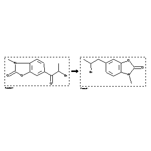

|  |
| FA | RX(1); FLST(1); RX(1) |
Reaction (1 of 1)
| Reaction ID | 2299311 |
| Reactant BRN | 3614645 |
| Reactant | 3-methyl-6-(2-bromopropionyl)-2(3H)-benzoxazolone |
| Product BRN | 6722067 |
| Product | (bromo-2-propyl)-6-methyl-3-benzoxazolinone |
| No. of Reaction Details | 1 |
Reaction Details (1 of 1)
| Reaction Classification | Preparation |
| Yield | 85 percent (BRN=6722067) |
| Reagent | triethylsilane |
| Solvent | trifluoroacetic acid |
| Time | 15 hour(s) |
| Other Conditions | Ambient temperature |
| Citation Pointer | 5863633; Journal; Caignard, D. H.; Vaccher, M. P.; Bonte, J. P.; Lesieur, D.; Cazin, M.; et al.; FRPSAX; Farmaco Ed.Sci.; FR; 39; 10; 1984; 830-836; |
Reference (1 of 1)
| Citation Number | 5863633 |
| Document Type | Journal |
| Authors | Caignard, D. H.; Vaccher, M. P.; Bonte, J. P.; Lesieur, D.; Cazin, M.; et al. |
| CODEN | FRPSAX |
| Journal Title | Farmaco Ed.Sci. |
| Language Code | FR |
| (Series) Volume | 39 |
| Number | 10 |
| Publication Year | 1984 |
| Page | 830-836 |